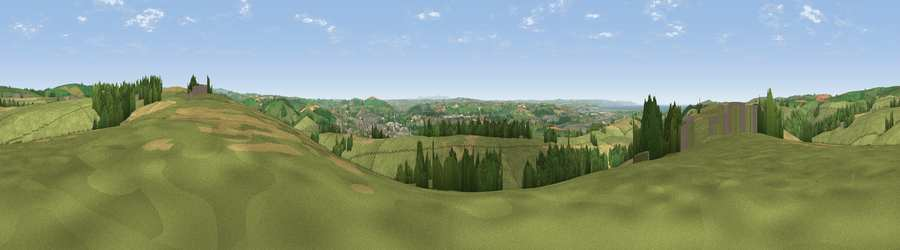

Viewpoint near Ashford
#6826 in England · top 18% of its area beats it · near AshfordThe view, rendered

A 360° render of this exact spot computed from the terrain model, tree cover and land cover — summer colours, afternoon light, calibrated against photographs of famous viewpoints. Real trees, hedges and buildings will differ in detail.
The panorama
Grey silhouette: terrain skyline in each direction (720 bearings, Earth curvature and refraction included). Dashed green: skyline with trees (+15 m) and buildings (+8 m) as obstacles. Blue strip: how far the ground is visible on each bearing.
Where the view opens
Wedge length = distance to the farthest visible ground on that bearing (vegetation-aware). Rings at 10, 25 and 50 km.
What fills the view
66% grassland · 14% cropland · 12% woodland · 4% built-up · 2% water
Angular shares of the visible panorama (visual magnitude), not map area. Landscape diversity 0.46 (0–1 Shannon).
Key numbers
More beautiful places nearby
The staircase of upgrades: each row has a higher view potential than everything closer. Driving times are estimates from straight-line distance, calibrated against real road routing — check an actual route before setting out.
| Place | Direction | Drive | Score |
|---|---|---|---|
| Viewpoint near Kings Heanton | E · 1 km | ~3 min | 71.1 |
| Viewpoint near Muddiford | NNE · 4 km | ~10 min | 71.5 |
| Viewpoint near Braunton | WNW · 7 km | ~14 min | 76.1 |
| Codden Hill | SSE · 8 km | ~16 min | 81.3 |
| Viewpoint near Croyde | WNW · 10 km | ~19 min | 83.7 |
| Viewpoint near Woolacombe | WNW · 10 km | ~20 min | 84.7 |
| Viewpoint near Combe Martin | NNE · 12 km | ~23 min | 86.9 |
| Viewpoint near Combe Martin | NNE · 13 km | ~24 min | 88.9 |
51.10718, -4.08368 · source: screening · position refined by local search. Computed location — check access rights before visiting.